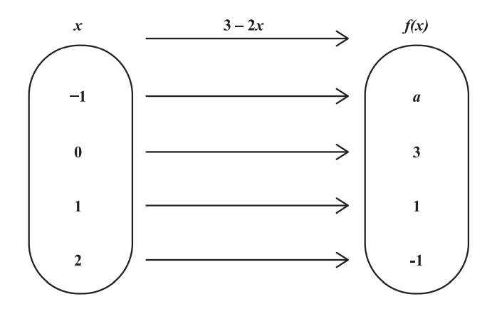
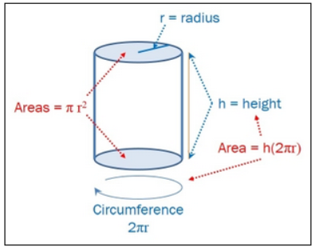
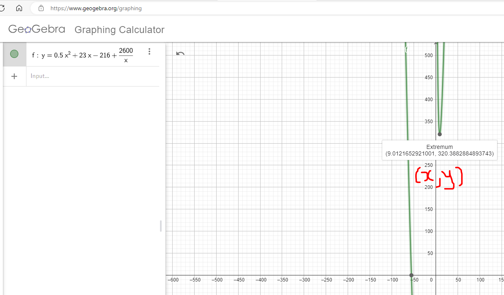
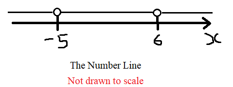

For ACT Students
The ACT is a timed exam...60 questions for 60 minutes
This implies that you have to solve each question in one minute.
Some questions will typically take less than a minute a solve.
Some questions will typically take more than a minute to solve.
The goal is to maximize your time. You use the time saved on those questions you
solved in less than a minute, to solve the questions that will take more than a minute.
So, you should try to solve each question correctly and timely.
So, it is not just solving a question correctly, but solving it correctly on time.
Please ensure you attempt all ACT questions.
There is no negative penalty for a wrong answer.
For JAMB, CMAT, and NZQA Students
Calculators are not allowed. So, the questions are solved in a way that does not require a calculator.
For NSC Students For the Questions:
Any space included in a number indicates a comma used to separate digits...separating multiples of three digits from
behind.
Any comma included in a number indicates a decimal point. For the Solutions:
Decimals are used appropriately rather than commas
Commas are used to separate digits appropriately.
Solve all questions.
Show all work.
As applicable, use at least two methods to solve the questions.
(5.) When the driver of a vehicle observes an impediment, the total stopping distance involves both the reaction distance (the distance the vehicle travels while the driver moves his or her foot to the brake pedal) and the braking distance (the distance the vehicle travels once the brakes are applied).
For a car traveling at a speed of v miles per hour, the reaction distance R, in feet, can be estimated by $R(v) = 2.3v$.
Suppose that the braking distance B, in feet, for a car is given by $B(v) = 0.05v^2 + 0.4v - 16$.
(a.) Find the stopping distance function, $D(v) = R(v) + B(v)$.
(b.) Find the stopping distance if the car is traveling at a speed of 50 mph.
(c.) Interpret D(50)
$
R(v) = 2.3v \\[3ex]
B(v) = 0.05v^2 + 0.4v - 16 \\[3ex]
(a.) \\[3ex]
D(v) = R(v) + B(v) \\[3ex]
D(v) = 2.3v + (0.05v^2 + 0.4v - 16) \\[3ex]
D(v) = 2.3v + 0.05v^2 + 0.4v - 16 \\[3ex]
D(v) = 0.05v^2 + 2.7v - 16 \\[3ex]
(b.) \\[3ex]
D(50) = 0.05(50)^2 + 2.7(50) - 16 \\[3ex]
D(50) = 244 \\[3ex]
$
If the car is traveling at a speed of 50 mph, the stopping distance is 244 feet.
(c.)
The car will need the value indicated by D(50) to stop once the impediment is observed.
In other words, the car will need 244 feet to stop once the impediment is observed.
(6.) Write functions for these relationships between/among variables.
(I.) Suppose that P(x) represents the percentage of income spent on health care in year x and I(x) represents income in year x.
Determine a function H that represents total health care expenditures in year x.
(II.) The participation rate is the number of people in the labor force divided by the civilian population (excludes military).
Let L(x) represent the size of the labor force in year x and P(x) represent the civilian population in year x.
Determine a function that represents the participation rate R as a function of x.
(I.) $H(x) = P(x) * I(x)$
(II.) $R(x) = \dfrac{L(x)}{P(x)}$
(7.) ACT Given the sets A = {0, 1, 2, 3} and B = {1, 3, 5, 7}. which of the following defines a function f from
A onto B?
$
\underline{First\;\;Approach:\;\;Calculating} \\[3ex]
Mapping\;\;from\;\;A\;\;onto\;\;B \\[3ex]
Use\;\;any\;\;two\;\;points\;\;and\;\;the\;\;corresponding\;\;points \\[3ex]
A = \{0, 1, 2, 3\} \\[3ex]
x_1 = 1 \\[3ex]
x_2 = 2 \\[3ex]
B = \{1, 3, 5, 7\} \\[3ex]
y_1 = 3 \\[3ex]
y_2 = 5 \\[3ex]
m = \dfrac{y_2 - y_1}{x_2 - x_1} \\[5ex]
= \dfrac{5 - 3}{2 - 1} \\[5ex]
= \dfrac{2}{1} \\[5ex]
= 2 \\[3ex]
y = mx + b \\[3ex]
For\;\; (3, 7) \\[3ex]
x = 3 \\[3ex]
y = 7 \\[3ex]
7 = 2(3) + b \\[3ex]
7 = 6 + b \\[3ex]
6 + b = 7 \\[3ex]
b = 7 - 6 \\[3ex]
b = 1 \\[3ex]
\implies \\[3ex]
y = 2x + 1 \\[3ex]
f(x) = 2x + 1
$
(8.) The function $P(y) = 0.032y^2 - 3.301y + 280.760$ represents the population P(in millions) of people in 2005 that were y years of age or older.
(a.) Identify the dependent and independent variable.
(b.) Evaluate P(50)
(c.) Interpret P(50)
(d.) Evaluate P(0)
(e.) Interpret P(0)
(a.) The dependent variable is P and the independent variable is y.
$
(b.) \\[3ex]
P(y) = 0.032y^2 - 3.301y + 280.760 \\[3ex]
P(50) = 0.032(50)^2 - 3.301(50) + 280.760 \\[3ex]
= 195.71 \\[3ex]
$
(c.) P(50) is the number of people (in millions) who were 50 years of age or older in 2005.
$
(d.) \\[3ex]
P(y) = 0.032y^2 - 3.301y + 280.760 \\[3ex]
P(0) = 0.032(0)^2 - 3.301(0) + 280.760 \\[3ex]
= 280.76 \\[3ex]
$
(e.) P(0) is the number of people (in millions) in 2005.
(9.) CSEC The function $f$ is defined as $f : x \rightarrow 3 - 2x$
(i.) The diagram below shows the mapping diagram of the function, $f$
Determine the value of $a$

(ii.) Determine, in their simplest form, expressions for
(a.) the inverse of the function $f$, $f^{-1}(x)$
(b.) the composite function $f^2(x)$
$
f(x) = 5x + 3 \\[3ex]
g(x) = 7x - 5 \\[3ex]
(a.) \\[3ex]
(f + g)(x) \\[3ex]
= f(x) + g(x) \\[3ex]
= (5x + 3) + (7x - 5) \\[3ex]
= 5x + 3 + 7x - 5 \\[3ex]
= 12x - 2 \\[2ex]
$
This is a linear function.
The domain is any real number.
Set Notation: Domain = {x | x is a real number}
Interval Notation: Domian = (−∞, ∞)
$
(b.) \\[3ex]
(f - g)(x) \\[3ex]
= f(x) - g(x) \\[3ex]
= (5x + 3) - (7x - 5) \\[3ex]
= 5x + 3 - 7x + 5 \\[3ex]
= -2x + 8 \\[3ex]
$
This is a linear function.
The domain is any real number.
Set Notation: Domain = {x | x is a real number}
Interval Notation: Domian = (−∞, ∞)
$
(c.) \\[3ex]
(f \cdot g)(x) \\[3ex]
= f(x) \cdot g(x) \\[3ex]
= (5x + 3)(7x - 5) \\[3ex]
= 35x^2 - 25x + 21x - 15 \\[3ex]
= 35x^2 - 4x - 15 \\[3ex]
$
The domain is any real number.
Set Notation: Domain = {x | x is a real number}
Interval Notation: Domian = (−∞, ∞)
(11.) CSEC (a) The functions f(x) and g(x) are defined as:
$
f(x) = \dfrac{5x - 4}{3} \\[5ex]
g(x) = x^2 - 1 \\[3ex]
$
(i) Evaluate $f(7)$
(ii) Write an expression, in terms of $x$, for $f^{-1}(x)$
(iii) Write an expression, in terms of $x$, for $fg(x)$
(b) (i) Express the quadratic function $f(x) = 3x^2 + 6x - 2$, in the form $a(x + h)^2 + k$, where $a, h$ and $k$ are constants.
(ii) Hence, or otherwise, state the minimum value of $f(x) = 3x^2 + 6x -2$
(iii) State the equation of the axis of symmetry of the function $f(x) = 3x^2 + 6x -2$
(iv) Sketch the graph of $y = 3x^2 + 6x - 2$, showing on your sketch
(a) the intercept on the $y-axis$
(b) the coordinates of the minimum point.
(13.) CSEC
(a.) Given that $f(x) = 4x - 7$ and $g(x) = \dfrac{3x + 1}{2}$, determine the values of:
$
(i)\;\; g(0) + g(5) \\[3ex]
(ii)\;\; fg(5) \\[3ex]
(iii)\;\; f^{-1}(1) \\[3ex]
$
(b) P(6, -1) and Q(2, 7) are the end points of a line segment PQ
Determine
(i) the gradient of PQ
(ii) the coordinates of the midpoint of PQ
(iii) the equation of the perpendicular bisector of PQ
(17.) A cylinder (round can) has a circular base and a circular top with vertical sides in between.
Let $r$ be the radius of the top of the can and let $h$ be the height.
The surface area of the cylinder, $A$, is $A = 2\pi r^2 + 2\pi rh$
(it's two circles for the top and bottom plus a rolled up rectangle for the side).

Assume that the height of the cylinder is $12$ inches.
(a.) Determine the domain of $A(r)$
In other words, determine the values of $r$ for which $A(r)$ is defined.
(b.) Write the radius as a function of $A$
In other words, determine the inverse function of $A(r)$
(c.) If the surface area is 300 square inches, what is the radius?
In other words, evaluate $r(300)$
Round your answer to two decimal places.
$
A = 2\pi r^2 + 2\pi rh \\[3ex]
h = 12\;inches \\[3ex]
A = 2\pi r^2 + 2 * \pi * r * 12 \\[3ex]
A = 2\pi r^2 + 24\pi r \\[3ex]
$
To determine the domain:
The area cannot be non-negative
It cannot be zero or negative.
The area must be positive (greater than zero)
Similarly, the radius must be positive (greater than zero)
$
A = 2\pi r^2 + 24\pi r \\[3ex]
2\pi r^2 + 24\pi r = A \\[3ex]
A \gt 0 \\[3ex]
\implies 2\pi r^2 + 24\pi r \gt 0 \\[3ex]
2\pi(r^2 + 12r) \gt 0 \\[3ex]
r^2 + 12r \gt \dfrac{0}{2\pi} \\[5ex]
r^2 + 12r \gt 0 \\[3ex]
r(r + 12) \gt 0 \\[3ex]
\underline{Boundary\;\;Values} \\[3ex]
r = 0 \\[3ex]
r + 12 = 0 \\[3ex]
r = -12 \\[3ex]
\underline{Test\;\;Intervals} \\[3ex]
r \lt -12 \\[3ex]
-12 \lt r \lt 0 \\[3ex]
r \gt 0 \\[3ex]
$
Test Intervals:
$r \lt -12$
$-12 \lt r \lt 0$
$r \gt 0$
$r$
$-$
$-$
$+$
$r + 12$
$-$
$+$
$+$
$r(r + 12)$
$+$
$-$
$+$
$
r(r + 12) \gt 0 \\[3ex]
r \lt -12 \cup r \gt 0 \\[3ex]
$
Let us check the solution of the Quadratic Inequality to ensure we are correct
$
(a.) \\[3ex]
Because\;\;r\;\;must\;\;be\;\;positive \\[3ex]
\underline{Solution:\;\;Interval\;\;Notation} \\[3ex]
Domain:\;\; (0, \infty) \\[3ex]
$
Student: Mr. C, I have two questions.
First one: do we need to go through all these steps?
We already know that the radius must be positive
So, after writing the test intervals; we can simply write that the domain is $r \gt 0$
We do not need to actually test it and check it.
Is that correct? Teacher: That is correct Student: Okay. The next question is
Do we have to write it in interval notation? Teacher: Because the domain is a set, it is important we express it in set notation and/or interval notation.
Set Notation: $\{r: r \gt 0\}$
Interval Notation: $(0, \infty)$
$
(b.) \\[3ex]
A = 2\pi r^2 + 24\pi r \\[3ex]
2\pi r^2 + 24\pi r = A \\[3ex]
2\pi r^2 + 24\pi r - A = 0 \\[3ex]
This\;\;is\;\;quadratic\;\;in\;\; r \\[3ex]
We\;\;can\;\;solve\;\;it\;\;in\;\;at\;\;least\;\;two\;\;ways \\[3ex]
\underline{First\;\;Method:\;\;Quadratic\;\;Formula} \\[3ex]
a = 2\pi \\[3ex]
b = 24\pi \\[3ex]
c = -A \\[3ex]
r = \dfrac{-b \pm \sqrt{b^2 - 4ac}}{2a} \\[5ex]
r = \dfrac{-24\pi \pm \sqrt{(24\pi)^2 - 4(2\pi)(-A)}}{2(2\pi)} \\[5ex]
r = \dfrac{-24\pi \pm \sqrt{576\pi^2 + 8\pi A}}{4\pi} \\[5ex]
r = \dfrac{-24\pi \pm \sqrt{4(144\pi^2 + 2\pi A)}}{4\pi} \\[5ex]
r = \dfrac{-24\pi \pm 2\sqrt{144\pi^2 + 2\pi A}}{4\pi} \\[5ex]
r = \dfrac{2\left(-12\pi \pm \sqrt{144\pi^2 + 2\pi A}\right)}{4\pi} \\[5ex]
r = \dfrac{-12\pi \pm \sqrt{144\pi^2 + 2\pi A}}{2\pi} \\[5ex]
r = \dfrac{-12\pi \pm \sqrt{2\pi(72\pi + A)}}{2\pi} \\[7ex]
\underline{Second\;\;Method:\;\;Completing\;\;the\;\;Square\;\;Method} \\[3ex]
2\pi r^2 + 24\pi r = A \\[3ex]
\dfrac{2\pi r^2}{2\pi} + \dfrac{24\pi r}{2\pi} = \dfrac{A}{2\pi} \\[5ex]
r^2 + 12r = \dfrac{A}{2\pi} \\[5ex]
Coefficient\;\;of\;\;r = 12 \\[3ex]
Half\;\;of\;\;it = \dfrac{12}{2} = 6 \\[5ex]
Square\;\;it = 6^2 \\[3ex]
r^2 + 12r + 6^2 = \dfrac{A}{2\pi} + 6^2 \\[5ex]
(r + 6)^2 = \dfrac{A}{2\pi} + 36 \\[5ex]
(r + 6)^2 = \dfrac{A + 72\pi}{2\pi} \\[5ex]
r + 6 = \pm \sqrt{\dfrac{A + 72\pi}{2\pi}} \\[5ex]
r + 6 = \pm \dfrac{\sqrt{A + 72\pi}}{\sqrt{2\pi}} \\[5ex]
r + 6 = \pm \dfrac{\sqrt{A + 72\pi}}{\sqrt{2\pi}} * \dfrac{\sqrt{2\pi}}{\sqrt{2\pi}} \\[5ex]
r + 6 = \pm \dfrac{\sqrt{2\pi(A + 72\pi)}}{2\pi} \\[5ex]
r = -6 \pm \dfrac{\sqrt{2\pi(A + 72\pi)}}{2\pi} \\[5ex]
r = -\dfrac{12\pi}{2\pi} \pm \dfrac{\sqrt{2\pi(A + 72\pi)}}{2\pi} \\[5ex]
r = \dfrac{-12\pi \pm \sqrt{2\pi(A + 72\pi)}}{2\pi} \\[7ex]
(c.) \\[3ex]
A = 300\;in^2 \\[3ex]
r = \dfrac{-12\pi \pm \sqrt{144\pi^2 + 2\pi * 300}}{2\pi} \\[5ex]
r = \dfrac{-12\pi \pm \sqrt{144\pi^2 + 600\pi}}{2\pi} \\[5ex]
r = \dfrac{-37.69911184 \pm \sqrt{1421.223034 + 1884.955592}}{6.283185307} \\[5ex]
r = \dfrac{-37.69911184 \pm \sqrt{3306.178626}}{6.283185307} \\[5ex]
r = \dfrac{-37.69911184 \pm 57.49937935}{6.283185307} \\[5ex]
r = \dfrac{-37.69911184 + 57.49937935}{6.283185307} \;\;OR\;\; r = \dfrac{-37.69911184 - 57.49937935}{6.283185307} \\[5ex]
r = \dfrac{19.80026095}{6.283185307} \;\;OR\;\; r = \dfrac{-95.19849119}{6.283185307} \\[5ex]
r = 3.151309405 \;\;OR\;\; -15.15130145 \\[3ex]
r\;\;cannnot\;\;be\;\;negative \\[3ex]
\therefore r = 3.151309405 \\[3ex]
r \approx 3.15\;inches\;\;to\;\;two\;\;decimal\;\;places
$
(18.) Indicate whether these set of two functions are equal.
If the two functions are not equal, specify the element of the domain for which the two functions have
different values.
$
(I.)\;\; f \circ g \\[3ex]
(II.)\;\; g \circ f \\[3ex]
(III.)\;\; (f \circ g)^{-1} \\[3ex]
(IV.)\;\; (g \circ f)^{-1} \\[3ex]
(V.)\;\; f^{-1} \circ g^{-1} \\[3ex]
(VI.)\;\; g^{-1} \circ f^{-1} \\[3ex]
$
$(VII.)$ Are any of the above the same?
(21.) An airplane crosses the Atlantic Ocean (3000 miles) with an airspeed of 550 miles per hour.
The cost C (in dollars) per passenger is given by
$
C(x) = 200 + \dfrac{x}{15} + \dfrac{32000}{x}
$
where x is the ground speed (airspeed ± wind)
(a.) What is the cost per passenger for quiescent (no wind) conditions?
(b.) What is the cost per passenger with a head wind of 50 miles per hour?
(c.) What is the cost per passenger with a tail wind of 100 miles per hour?
Head Wind:
The airplane works against a head wind because they move in opposite directions (compare to driving a car up a hill)
Hence, the ground speed is: airspeed − wind
Tail Wind:
The airplane works with a tail wind because they move in the same direction (compare to drivig a car down a hill)
Hence, the ground speed is: airspeed + wind
(23.) The average cost per hour in dollars of producing x riding lawn mowers is given by the following:
$
\bar{C}(x) = 0.5x^2 + 23x - 216 + \dfrac{2600}{x} \\[5ex]
$
(a.) Use a graphing utility to determine the number of riding lawn mowers to produce in order to minimize
average cost.
(Round to the nearest whole number as needed).
(b.) What is the minimum average cost?
(Round to the nearest cent as needed).
We shall use the GeoGebra software to graph the
function.
Please see below:

(a.) The average cost is minimized when approximately 9 lawn mowers are produced per hour.
(b.) The minimum average cost is approximately $320.39 per mower.
The 7th root is an odd-numbered root
Hence the radicand can be negative, zero, or positive
But the radicand is a fraction (rational function)
So, there is a restriction on the domain: the denominator of the fraction cannot be zero
Let us set it to zero and solve for the values that would make it zero
Those values would be restricted from the domain
$
g(t) = \sqrt[7]{\dfrac{t + 2}{t^2 - t-30}} \\[5ex]
Radicand = \dfrac{t + 2}{t^2 - t-30} \\[5ex]
Denominator\;\;of\;\;Radicand = t^2 - t - 30 \\[3ex]
Set\;\;to\;\;zero\;\;and\;\;solve \\[3ex]
t^2 - t - 30 = 0 \\[3ex]
(t + 5)(t - 6) = 0 \\[3ex]
t + 5 = 0 \;\;\;\;OR\;\;\;\; t - 6 = 0 \\[3ex]
t = -5 \;\;\;\;OR\;\;\;\; t = 6 \\[3ex]
$
−5 and 6 are restricted from the domain

Therefore the domain is:
$
\underline{Set\;\;Notation} \\[3ex]
D = \{x | x \ne -5, \;\; x \ne 6\} \\[5ex]
\underline{Interval\;\;Notation} \\[3ex]
D = (-\infty, -5) \cup (-5, -6) \cup (6, \infty)
$
(26.) Determine the intercepts of the equation: $5x^2 + 4y = 20$
(27.) P is a point with coordinates (x, y) on the graph of $y = x^2 - 2$
(a.) Express the distance, d from P to the origin as a function of x
(b.) Use a graphing utility to graph d
(c.) For what positive value of x is d smallest?
(a.)
$
\underline{Distance\;\;Formula} \\[3ex]
Point\;1 = Origin = (x_1, y_1) = (0, 0) \\[4ex]
Point\;2 = (x_2, y_2) = (x, y) \\[4ex]
distance = \sqrt{(x_2 - x_1)^2 + (y_2 - y_1)^2} \\[4ex]
d = \sqrt{(x - 0)^2 + (y - 0)^2} \\[4ex]
d = \sqrt{x^2 + y^2} \\[4ex]
But:\;\; y = x^2 - 2 \\[3ex]
\implies \\[3ex]
d = \sqrt{x^2 + (x^2 - 2)^2} \\[4ex]
d = \sqrt{x^2 + [(x^2 - 2)(x^2 - 2)]} \\[4ex]
d = \sqrt{x^2 + [x^4 - 2x^2 - 2x^2 + 4]} \\[4ex]
d = \sqrt{x^2 + x^4 - 4x^2 + 4} \\[4ex]
d = \sqrt{x^4 - 3x^2 + 4} \\[3ex]
$
(b.) The graph of the function is:
 For ACT Students
For ACT Students